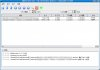
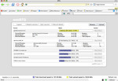
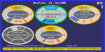
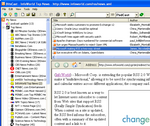
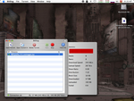
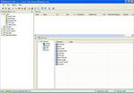
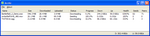
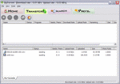

These are some of the public projects that uses libtorrent. If you want your project listed here, let me know.
electric sheep electric sheep is a screensaver which collectively generates animations and lets the users vote which one to live on. |
|
qBittorrent qBittorrent is a QT bittorrent client available for linux (likely portable to most other desktops as well). Written by Christophe Dumez. |

|
btg btg is a *nix bittorrent client which is run as a daemon. It has multiple user interfaces which connects to the daemon. One GUI (Gtkmm), one terminal interface (ncurses) and one web interface (accessable through a web browser). Written by Michael Wojciechowski and Johan Ström. |

|
MooPolice MooPolice is a windows bittorrent client with a quite unique look. |

|
BitsCast RSS reader, podcast subscriber, video feed downloader, bittorrent feed downloader. See BitsCast homepage for more info. |

|
BitSlug BitSlug is a MacOSX cocoa client. |

|
BitBuddy BitBuddy is a windows bittorrent client by Daniel Wang, quite similar to BitComet GUI-wise. |

|
Arctic Torrent Arctic Torrent is a light-weight bittorrent client for windows. Written by Cory Nelson. |

|
ZipTorrent ZipTorrent is another windows bittorrent client with decentralized search facility. |

|
FireANT FireANT is a video blog available for Windows and Mac OSX. |
|
eDonkey 2000 eDonkey2000 comes bundled with a bittorrent plugin by 'The Orphan'. |
|
pHoeniX pHoeniX is an eMule mod supporting, among other things, bittorrent. |